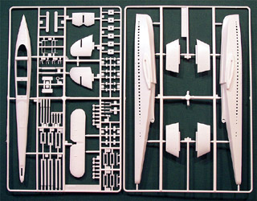

{kind=link}
{kind=link}
{kind=link}
{kind=link}
{kind=link}
{kind=link}

{kind=link}
{kind=link}
You may click on these small images to view larger pictures
Matchbox 1/144 Dornier Do-X
Kit #571
Collector�s Market Value $11.71
Images and text Copyright � 2005 by Matt Swan
Developmental Background
I think one of the most recognizable flying boats it the Dornier Do-X. This thing was huge, a dream air ship outfitted like a sea going luxury liner. When Claudius Dornier designed this and began construction he did not want to take any risks with untried technology, everything was to be done with tried and true equipment to avoid and failure from unproven equipment. Unfortunately this was the downfall of the aircraft.
Design work began in 1924 in Altenrhein, Switzerland and nearly a quarter million man-hours were expended over the next five years before full size wooden mockup of the aircraft was completed. The three decker passenger plane was magnificent to see but somewhere along the line Dornier seemed to have lost control of the project. There seemed to be no attempt to control weight on the aircraft. Lavish bathrooms, bars, kitchen and elegant dining salon were installed. Furniture in writing rooms was of heavy, luxurious construction like that found on a luxury cruise ship. The aircraft was powered by twelve 640hp Curtiss Conqueror liquid-cooled engines mounted above the wing in a push/pull configuration. While the basic design of the engine was good it did not produce the horse power required to handle a ship of this size and weight. Combine this with the raised aspect of the engines and the resulting drag from that design and the power levels are robbed considerably. Add in the necessary fuel requirements for these engines (more weight) and the problem grows worse.
Only three Do-X flying boats were built and these were mostly good for propaganda purposes having sever speed and altitude issues. Had Dornier looked to new technology in his engines and made some simple design changes like burying the engines into the wing and eliminating many of the protruding control mechanisms and instituted a stringent weight loss program for the aircraft its chances success may have been greater. The last Dornier Do-X was destroyed in 1943 during an RAF air raid on Berlin.
The Kit
My preferred scale in modeling is 1/48 with 1/72 as a last resort for unusual subjects not available in the larger scale. For this aircraft we have no choice but to look at 1/144 scale. Even at this scale the model has nearly the same wingspan as a 1/72 scale B-17. The Matchbox kit comes in a relatively large box for a kit of this scale with some very eye catching box art. Inside we have four large sprues of injection molded pieces done in clean white plastic and a single sprue of clear parts.
Looking over the 123 white parts we have a combination of raised and recessed detail. There is just a little bit of flash on some of the parts and a couple of the propellers are short cast on the blades (some repair work needed here). The larger pieces were removed from the trees and test fit with good results. I did not find any warpage and general fit and alignment is good. There are five clear parts that cover all the passenger portholes and the cockpit glazings. It almost seems like the control cabin should be called a bridge rather than a cockpit just because I get a feeling of ocean going ship more than aircraft when handling the model. One problem I found with the clear parts is the cockpit glazing is fogged across the front. This may not be very noticeable when the model is complete and there is no interior detail to hide anyway. Lastly there is a four piece display stand. Overall this kit includes 132 pieces.

You may click on the small images above to view larger pictures
Decals and Instructions
The instructions consist of a single A3 sized sheet printed on both sides. On mine nearly everything is in Japanese, this may be an idiosyncrasy of the kit issue that I have. It appears that the Japanese text may cover a brief history of the aircraft and includes a color chart. For other language users you�ll have to refer to the box art and historical documents for correct colors. The instructions include 23 small exploded view construction steps that appear to be fairly straight forward. There is also a single panel for decal placement and exterior painting.
The decals consist of a single mid-sized sheet done nearly entirely in black print with numbers for one aircraft. The Dornier logo is printed in color. Color density looks good and the print is clean and crisp. I have to wonder about the color of the larger numerals though. I have seen this aircraft modeled with the large numbers in black and in red, which is correct? I have no idea. As to how these decals will react to common setting solutions I can not hazard a guess. I plan on trying the most mild agents first and work my way up to more aggressive compounds as needed.
Conclusions
I sure would like to find a copy of this kit in 1/72 scale at least but 1/144 is all we have to deal with. The aircraft certainly is a looker and played an interesting role in aviation history. The Matchbox model is reasonable good for what it is, parts seem to fit well and there is no heavy flash or warpage. Surface detail is acceptable but we do have some short molding in the propellers and fogging on some of the clear parts. Probably the largest advantage to this kit is it allows the modeler to build and display a representation of this tremendous aircraft without having to build a spare room to house it.
Construction
5/26/09
I had been working with mark Therrell�s technique for painting wood with oils when I thought of this kit and all those wooden propeller blades. That was the impetuous for this build. The propellers presented a little bit more of a challenge than normal as I had forgotten that a few of them were short-shot from the molds and needed new blades made. These were cut from very thin strips of Evergreen plastic strip, sanded to shape and glued to the hub. While this stuff was drying I went ahead and built the tail assembly. Back to the engines I put the basic pieces together with the intent that the propeller blades would be glued in position rather than be able to spin. This made painting a much easier task. Now I could paint the engine nacelles after assembly and do the props separately. Initially I had planned on using the clear cabin windows provided by the kit but after a test fit I saw they did not fit well and would require a lot of masking. I decided to ditch these pieces and just use clear parts cement to make windows after everything was painted. I did paint the interior black and made a floor and bulkhead for the flight deck to prevent see-through. This was all painted black. I did use the flight deck clear parts and masked them off with tape.
You may click on these small images to view larger pictures
Engines were painted with Krylon Gloss Black Fusion then airbrushed with Alclad Duraluminum. Propellers were done with the Krylon then with Alclad Magnesium to color the hubs. Next the got coated with Testors enamel light tan then brush painted with Burnt Sienna oil paint mixed with Japan Dryer. Once this had set up they were coated with Future. Completed engine assemblies were set aside until the final stages of the build.
Between painting and drying of engine parts the main hull was assembled and the wing sponsons were installed. Now the wing could be put together and the rest of the model assembled. Once all the primary parts were together the whole thing was coated with Krylon Gloss Black then hit with Alclad Aluminum. While paint was drying I was contemplating the overall size of this thing and tried to figure a size comparison to something like a B-17 and decided that the Do.X would be about 50% larger than the B-17, now that�s pretty big. With all this in mind I started hunting for a 1/144 B-17 to place next to this and really was not finding much when I came across a Minicraft 1/144 DC-3 and thought that was perfect so you will see that DC-3 show up later on.
You may click on these small images to view larger pictures
The lower hull was masked off then airbrushed with flat black. Once this was dry and the masked were removed I brush painted the black area with Future to give it a little shine. Decals were applied without the use of Future, just some Micro-Sol setting solutions. The support struts for the engines were airbrushed separately then all the engine stuff was added to the top of the wing and the few masks from the flight deck were removed. And there she is, all done and gorgeous. Overall this was a pretty pleasant little build; it was fast, not terribly involved and gave a nice respite from the more complex 1/48 builds. Only down side to it is now I have started collecting 1/144 prop liners.
As a footnote let me talk about that DC-3 for a moment. Mohawk Airlines began operations in 1945 as Robinson Airlines in Ithaca New York. It was purchased by Robert Peach in 1952 and was renamed Mohawk Airlines at that time. Mohawk serviced the North-Eastern United States particularly New York and Pennsylvania. In 1960 Mohawk Airlines offered �Gas Light Service� until the end of 1961 using three DC-3s with cabins redecorated in Victorian parlor style. These aircraft offered this extraordinary service in an effort to compete against other airlines operating more modern equipment. The men-only service featured free beer, cheese and pretzels and �good� five-cent cigars were available. This was centered on a �Gay �90s� theme which harkened back to a 19th century idea (Gay had a totally different meaning in those days) and included stewardesses in appropriate attire. Mohawk Airlines also operated Convair-Liner 240s and 440s as well as the Martin 404. Mohawk is noteworthy on a social point as being the first airline to hire an African-American flight attendant. In 1972 the airline was purchased by Allegheny Airlines which became USAir later in the seventies and is now known as US Airways.


{kind=link}
{kind=link}
{kind=link}
{kind=link}
{kind=link}
{kind=link}
{kind=link}
{kind=link}
{kind=link}